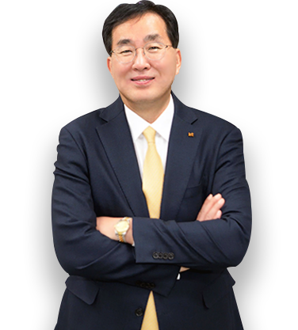

home > 회사소개 > CEO 인사말
CEO 인사말
NO.1 고객서비스 전문 기업 kt is
따뜻한 감성과 두려움 없는 혁신으로 차별화된
고객경험과 가치를 제공하겠습니다!
안녕하십니까, kt is 대표이사 윤경근입니다.
kt is는 “따뜻한 감성과 두려움 없는 혁신으로 차별화된 고객경험과 가치를 제공한다”는 비전 아래 고객의 삶의 변화를 주도하는 고객서비스 전문 기업입니다.
저희 kt is는 KS-CQI(한국 콜센터 서비스품질지수)에서 7년 연속 1위를 달성한 KT 고객센터를 비롯해 번호안내114, 공공기관, 주요병원, 금융기관 등 90여개 고객 센터를 운영하고, KT 유ᆞ무선 통신서비스 유통 및 판매 등을 영위하고 있습니다.
앞으로도 kt is는 주력사업을 효율적으로 운영하여 수익성을 강화하고, 컨택사업 시장 확대, 보유 역랑을 활용한 신규 사업개발을 통해 고객중심 경영 · 이익 경영을 실천하는 상장기업으로서의 소임을 다하고, 고객서비스 전문 기업으로서의 위상을 더욱 굳건히 하겠습니다.
지금까지 보여주신 든든한 지원과 성원에 감사 드리며, kt is 임직원은 모든 역량을 집중하여 지속적으로 회사의 가치를 높일 수 있도록 끊임없이 노력하겠습니다.
감사합니다.
CEO윤경근